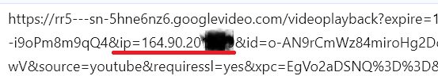

Заметили, что загрузка видео на youtube через прокси стала надолго повисать. Иногда требуется обновить страницу (а некоторые видео не начинают грузиться даже после нескольких F5).
В режиме разработчика браузер показывает множество timeout при соединении с googlevideo. Если скопировать адрес из строки с таймаутом, выясняется, что этот хост GGC расположен в РФ. У него соответствующий ip и он пингуется за 23мс. После ряда таймаутов иногда начинает грузить из Киевского GGC.
- Причина не в протечке DNS. -Резолв выполняется внутри прокси. Да и в TUN режиме то же самое. Поэтому можно исключить такую проблему, как выдача DNS сервером IP адреса для конкретного региона, когда резолв идет мимо прокси.
- Смена dns сервера ничего не даёт.
- Утечка по v6 так же исключена полностью.
- webrtc вырублен (тем более, ситуация повторяется при проверке командой
yt-dlp --get-url). - При загрузке через yt-dlp напрямую из терминала NL сервера всё равно отправляет в рф.
- Проблема наблюдается с разными хостингами.
Но по всей видимости не касается (или в меньшей степени касается) юзеров крупных публичных VPN сервисов, т.к. в отношении них бесполезно проводить маркировку по регионам.
Если завернуть Warp в Proxy (Detour Warp Through Proxies) или запустить warp прямо на прокси сервере, чтобы google видел IP CF, а не прокси. Тогда timeout до GGC РФ исчезают, видео начинает грузиться нормально. А yt-dlp --get-url получает корректные адреса googlevideo
Подробнее о проверке симптомов у себя в браузере:
UPD:
После Report IP problems - Google Search Help IP пробыл в Нидерландах сутки, а затем вернулся обратно в РФ. Но при этом уже нет таймаутов. Только 403 ошибки.
Снова посылает на РФ хосты, но сейчас они уже отдают видео поток, чего не наблюдалось несколько дней назад (когда качало только из киева, а РФ показывала таймауты).
На проксе из другого хостинга, для которой тикетов не создавалось и регион не менялся, тоже починился просмотр.
Интересное наблюдение:
- Когда IP был привязан к NL региону, даже 403 ошибок не возникало. Сразу выдавало корректные хосты для googlevideo.
- Аналогично при работе через CDN CF: ни одной 403 ошибки - все соединения с googlevideo корректные.
Т.е. оно вроде и починилось, просмотр не виснет теперь. Но, когда регион IP, который видит google, соответствует фактическому местоположению этого сервера, то работает без 403 ошибок. И без петли размером в пол мира из рф в NL и обратно.
Из другого треда:
Думаю, что для залета в базу IP РФ достаточно недельку посмотреть ютуб через проксю.
В других GeoIP базах адрес будет правильно показывать регион. Но у гугла своя отдельная база регионов.
DNS тут не причём, писал об этом:
Если попадаются видео, скрипт которых не хочет лезть на европейские сервера, запускаю через прокси, а после загрузки первого куска пускаю через byedpi остальное.
Я тоже написал, что днс тут ни при чем.
Локальный ggc для IP прокси сервера в NL это точно не GGC в РФ. А когда после прокси в detour режиме warp, то гугл уже правильно отправляет на ggc в NL или лондоне, например. Вы читали пост вообще?
Да, три раза перечитал.
Гугл отправляет вас на ру кеш серверы и вы видите в этом что-то большее чем распределение нагрузки на серверы? Иначе я не понял поста
Четыре года смотрю через американскую проксю, в базу не попадал пока.
Что непонятного? Гугл отправляет амстердамского юзера грузить видео из РФ. Но РФ GGC вообще не могут отвечать на запросы из амстера. Если вы тут не видите ничего странного, ну ладно. Будете просто страничку почаще обновлять, пока к киеву не прицепится.
Возможно IP этого юзера привязан к российскому юр. лицу.
Браузер чистый? Вход в аккаунт не выполнен? Попробуйте в incognito mode.
что в этом странного? так работают кеш серверы, они созданы для снижения нагрузки на основные серверы, а то что в рф они лагучие, гугл еще не разобрались. я несколько месяцев назад мониторил трафик на молдавской впс, там видео грузились с турецких кеш серверов местных инет провайдеров. на немецкой впс щас посмотрел: в основном франкфурт, но проскакивает сша (as google)
Я же сказал, что yt-dlp --get-url показывает то же поведение, а это наиболее чистый браузер по сути из всех возможных. Без варпа получает адреса в РФ. С варпом получает нормальные адреса, близкие к прокси серверу.
Я больше не будут отвечать на одни и те же вопросы, раскрытые в посте.
в гугл поиске пролистайте вниз, там будет написано к какой стране гугл вас относит. на чистых айпи адресах берет локацию по geoip, но если как-то засветить реальную локацию (может по gps, точно не знаю), то она поменяется и привяжется к ip адресу
Пробейте IP амстердамского юзера по базам, мои европейские VPS приобретённые у хостеров в РФ в половине случаев определяются как РФ.
Сейчас попробую полностью через прокси подключится и проверить перенаправление в РФ.
Я бы всё-таки не сбрасывал со счетов dns, слышал doh передаёт регион для распределения нагрузки. Попробуйте 9.9.9.9, он не передаёт. Вдруг, он у вас всё-таки напрямую или по accept language какому-нибудь смотрит.
Проверил: Полностью через прокси через Ctrl+F5 загрузил страницу — скрипт в РФ не лезет. Если во время просмотра переключить *.googlevideo.com на byedpi, то скрипт начинает долбится в РФ, мой плагин это отсекает и видео продолжает грузится из старого места.
Добавлено: Если переключить обратно всё через прокси, то скрипт ломается и продолжает пытается подключится к РФ через американский прокси, хотя с точки зрения кэша надо перестать это делать.
У меня en-US, по часовому поясу спуфинг Лондона.
Киев и москва через амстердамский прокси. Таймаутов не меньше. Появились еще таймауты до GGC в сша.
9999 выдало в США WoodyNet
Может быть дело в видео, которое вы качаете? Можете предположить, в каких странах его целевая аудитория? В Амстердаме оно кому-нибудь интересно? Как вариант - отдается из кеша, где подавляющее число зрителей, несмотря на ваш европейский IP-адрес.
Видео из тайваня на китайском для очень узко специализированной аудитории.
https://www.youtube.com/watch?v=8BR987FOuF8
Запрос непосредственно из сервера без проксей - лезет в рф.
Открыл — лезет в РФ и не кажет, нажал Ctrl+F5 — начал грузить из Франкфурта и показывать.
Вот именно. До f5 посылает в рф на хосты, которые даже отвечать не хотят. Но при этом часто не выдает другие.
Да гугл так делает. Заметил еще до ютуба. Пользовался Gemini успешно, потом он стал писать, что в моей стране не поддерживается. Решил погуглить на эту тему и нашел инфу, что гугл присваивает ип адресу другую страну на основании многих факторов где он используется.
Сейчас если на VPS Нидерландов с v4 сделать yt-dlp --get-url то отдается в 100% московский GGC и идут таймауты. Если на сервере запустить клиента WG до CF, то гугл начинает отдавать нормальный иностранный адрес до googlevideo.com.
Зарепортил гуглу свой ип Report IP problems - Google Search Help и написал хостеру. Может что-то выйдет.
По другим базам ип бьется как NL и SW, но никак не Россия.
За неделю-две использования VPN в Нидерландах я видел как сервера были то в Украине (Киев, Днепр, Харьков), РФ (Спб), Нидерландах… думаю в плане ютуба так в первую очередь раскидывают нагрузку серверов и канала.
И при обращении к googlevideo передается ип определенный на youtube, и если ип разные то некоторые googlevideo могут не отдать видео
При проверке в yt-dlp непосредственно из сервера без проксей и браузеров всё равно выдает РФные гуглвидео. Не надо придумывать лишние сущности.
Да и не передается нигде айпишник отдельно. Уже исключили днс и в yt-dlp внутри отсылаемых данных нет IP клиента. Гугл видит тот ip, который к нему обратился и никакой другой.
В браузере при запросе к гуглвидео ип передается, были сервера где при различии в ип не отдавали видео, но у вас что то другое раз с хоста не получается даже

Да я имел ввиду, что домашний ip нигде не фигурирует, когда через прокси запрос идет.
А когда непосредственно из сервера, так тем более не может взяться никакого РФ ip при отправке запроса.
Они меняют привязку, но через месяц вернут на родину при утечке локации гуглоаккаунта через карты, использовании без прокси и т.п.
При этом на адресах VPN-провайдеров вроде Протона смена локации не происходит - видимо куча пользователей из разных стран ломают статистику и берётся адрес из базы RIR.
Так никто и не посмотрел…

Где тут посмотреть?
Внизу слева обычно написано, на странице с результатами поиска тоже есть
Как я понял, если ничего не пишет, значит USA.
Есть сервер из Финляндии у российского провайдера, Google пишет Россия.
Да не важно, что там написано. У меня пишет россия под проксей, которая пока еще не внесена а базу РФ и получает корректные хосты googlevideo из NL.
Этот геотаргетинг начался летом 2023. В линуксе можно выдернуть регион так:
curl -s https://www.google.com/ 2>&1 |
grep -o -P '(?<=www\.google\.ru\/intl\/).*(?=\/about\/products)'
Интересно, как быстро гугл убёрет недоступные серверы в РФ из выдачи.
Да напрямую с NL VPS выдало RU =(
У меня был туннель настроен на опенврт с вг и влесс с точечной маршрутизацией по доменам. Добавил кучу гугловских доменов вручную И на обоих лагало. И получалось так что открывается сайт долго, но если открыть видос, то тянет 4к нормально. В итоге я плюнул на этот авторезолвинг и зафигачил все гугловские подсети в статические маршруты и все как рукой сняло.
UPD: если полностью заворачивать трафик или по приложениям с телефона, то проблем так же нет. Проблема именно в точечной маршрутизации. Как будто имеется хост, который вообще никак не фигурирует в списках обхода блокировок , по которому гугл определяет местоположение. Поэтому было решено весь гугл завернуть в тунель
ru только напрямую и через warp, через остальные прокси ничего не написало
Да, опросил пользователей тунелей, которые всё машрутизируют, проблем нет.
Всё. У меня ютуб через NL полностью умер. Ни один видос не грузится дольше пары минут. Если вчера после серии таймаутов хотя бы кидало на киевский хост, который отдавал видео. То сегодня бесконечно долбится в таймауты. Хоть ты 50 раз F5 жми.
Стоит только скрыть прокси сервер за CF, сразу идёт загрузка и ни одного таймаута в логе браузера.
Я уже готов поверить в сговор. Тем более после того, как яблоко начало скрывать vpn приложения для рф.
А Ctrl+F5 не помогает?
А в чей IP ломится, московский?
Никогда такого не ловил, была проблема OgQIAxAK, либо не грузил с момента открытия страницы, до предёргивания прокси или Ctrl+F5.
Я обычно первым делом после создания впн на сервачке лезу проверять как у меня открывается сайт делла и как меня узнает гугль. Если не подходит , удаляю и регаю до тех пор пока нормально не определит
Меня стало чаще кидать на российские сервера, но всё ещё работает. Что странно, yt-dlp --get-url с vds российские сервера гугл видео вообще не выдает (чаще всего загружает с Одессы), а вот с браузеров на локальной машине периодически проскакивает. Проверял на dnsleak, приватный режим, всё чисто.
Есть ещё ECS, но стандарными резолвероми вроде не заполняется.
Расскажите, пожалуйста: а как?
https://www.gstatic.com/ipranges/goog.json список подсетей . добавлять в зависимости от роутера
Не поможет если ип впс уже внесен в геотрекинг как российский. Даже с самого впс работать не будет.
А, они даже сами предоставляют. Благодарю, не знал.
К слову, cloudflare warp vpn (wireguard) Новосибирск (вроде как ru ip, но без цензуры). Тоже тянет видео с киевского GGC (74.125.15.224). Интересно, почему не из Белоруси.
А вычислил регион я так: просто посмотрел, где меньше всего ping (1мс).
Upd: без warp тянул из Москвы (173.194.179.217). У меня провайдер Йота.
Вопрос как обойти все это великолепие, немецкий VPS показывает ру регион, как и Бинг, однако по ipinfo показывает регион DE
PS: через прокси видосы грузит , bing ai пашет
Там может быть капча без логина, если Гуглу что-то не нравится. А warp отдаёт серверу IP из твоей реальной локации.
Здесь только адреса, принадлежащие гуглу, там нет локальных GGC. Так, для информации, если кто-то будет использовать этот список для проксирования Youtube.
А что , гуглу не принадлежат гугловские ggc?))) Выше определили Киевский ggc, он есть в списке
Я глубоко не погружался в работу GGC. Но я собирал адреса *.googlevideo.com в своей домашней сети, выяснил что кроме узлов в США, я еще подключаюсь к Московскому (87.226.176.0), Владикавказскому (79.133.77.0), Иркутскому (176.59.159.0). Точных ip и имен нет, т.к. добавлял с маской /24. Эти адреса принадлежат РФ провайдерам, в гугловом списке их нет.
Вот, нашел
Спойлер
rr13---sn-n8v7kn7e.googlevideo.com 173.194.163.159 Истон
rr9---sn-n8v7kn7l.googlevideo.com 173.194.163.219 Истон
r15---sn-n8v7kn7s.googlevideo.com 173.194.176.33 Истон
rr2---sn-n8v7kn7z.googlevideo.com 173.194.176.84 Истон
rr14---sn-n8v7kn7y.googlevideo.com 173.194.177.160 Истон
rr6---sn-n8v7kn7k.googlevideo.com 173.194.177.24 Истон
rr8---sn-n8v7knee.googlevideo.com 173.194.178.26 Истон
rr13---sn-n8v7znse.googlevideo.com 173.194.179.95 Истон
r13---sn-n8v7knes.googlevideo.com 173.194.180.159 Истон
rr2---sn-n8v7znsr.googlevideo.com 173.194.181.212 Истон
rr5---sn-n8v7znsr.googlevideo.com 173.194.181.215 Истон
rr14---sn-n8v7znsd.googlevideo.com 173.194.181.96 Истон
r11---sn-n8v7kne6.googlevideo.com 74.125.110.219 США
rr3---sn-4g5ednsy.googlevideo.com 74.125.173.136 Моунтайн-Вью
rr1---sn-gvnuxaxjvh-88vz.googlevideo.com 79.133.77.108 Владикавказ
rr2---sn-gvnuxaxjvh-88vz.googlevideo.com 79.133.77.109 Владикавказ
rr3---sn-gvnuxaxjvh-88vz.googlevideo.com 79.133.77.110 Владикавказ
rr1---sn-gvnuxaxjvh-88vs.googlevideo.com 87.226.176.204 Москва
rr2---sn-gvnuxaxjvh-88vs.googlevideo.com 87.226.176.205 Москва
rr3---sn-gvnuxaxjvh-88vs.googlevideo.com 87.226.176.206 Москва
rr2---sn-gvnuxaxjvh-3i8l.googlevideo.com 92.50.230.13 Кызыл
rr4---sn-gvnuxaxjvh-3i8l.googlevideo.com 92.50.230.15 Кызыл
Возникла идея. А может ли быть такое, что ютуб так же руководствуется часовым поясом vps при выборе сервера для отдачи видео? Я на своём сервере поставил московский часовой пояс, т.к. с финским поясом часть сайтов тупила и не открывалась или открывалась очень долго после нескольких обновлений.
Кстати, попробуйте отключить Kyber. Я заметил, что Kyber ломает googlevideo.com (только его) в РФ.
Абсолютно одинаково, что с ним, что без него. Просто иногда попадаются сервера googlevideo на ростелекоме и в этом случае загрузка останавливается. Помогает обновление страницы.
Пока…
Мне тоже помогало раньше. Сейчас можно тыкать F5 до посинения, но без CF не подсунет рабочих googlevideo.
Сам сайт с картинками и превью при этом работает ок и без CF.
Начал сегодня получать 400-500кбс в Ютуб (connection speed) через домашний интернет, жуткие лаги через VPN (VMESS). Ролик постоянно пытается открыться в 144-480p. Другие сайты работают корректно, с интернетом все в порядке, сервер в норме. Наткнулся на эту тему. Выглядит очень похожим. Как я могу проверить, оно ли это? и как с этим бороться.
upd: Сервер в Эстонии, отправил команду с VPN сервера - получил ru
Google начал вносить IP Proxy серверов в список адресов РФ (геотаргетинг). При этом они физически не RU и соединиться с российскими GGC не могут?
Потому что, настоящие RU клиенты идут через московский GGC, например.
Как я говорил, cloudflare vpn псевдоru пошёл в Украину, но успешно.
Да, это может быть проблемой.
del
В инструментах разработчика в браузере. Смотрите домен URL с которого загружается видео и проверяете трасировкой куда маршрут идёт.
Недоступные сети в РФ можно заблокировать в файле hosts или так.
Открыть режим разработчика в браузере, вкладка “сеть”.
Обновить страницу и смотреть на ошибки соединения с названием videoplayback.
Копировать url из строки с такой ошибкой. Взять из него хост с googlevideo.com. Типа такого rr5---sn-gvnuxaxjvh-n8vk.googlevideo.com
И сделать с ним ping. Если время около 25мс, то сразу понятно, что это РФ GGC. Если не ответит на пинги или время больше. Можно взять ip, который показала команда ping и пробить так https://ipinfo.io/213.59.210.16 В нашем примере там: " Moscow, Russia, AS12389 - PJSC Rostelecom, Other providers place this IP in Khabarovsk, Khabarovsk"
-Видим, что РФ. Убеждаемся, что ютуб посылает европейский сервер загружать поток из РФ, но РФ отвечает таймаутами. Если в итоге видео пошло всё таки после ряда таймаутов, можно скопировать url из строки videoplayback, где ошибки соединения нет. И посмотреть, в каком регионе этот хост. Скорее всего он будет в киеве, а вовсе не в стране физического нахождения прокси сервера.
Всё это не нормально. При подключении через цепочку прокси+CDN CF таймаутов вообще нет. А видео грузится из страны физического расположения прокси сервера.
Напишите ещё раз, как там дела. Действительно ли это оно самое. Я процитирую пост.
Мне больше кажется вероятным сценарий, когда пользователи заходя через VPN на YouTube логинятся своей гугловой учеткой, в которой указана локация РФ, идентифицируются как из РФ, и Гугл направляет их на GGC РФ.
Так же может иметь дело фингерпринтинг устройства/браузера для определения геолокации.
Ещё есть теория, что пользователи проксируют список доменов *.googlevideo.com, но не проксируют например redirector.google.com, который возможно тоже участвует в определении какой GGC выдать пользователю.
А теория, в которой Гугл вносит IP проксей в какую-то базу, мне пока кажется конспирологической.
логинятся своей гугловой учеткой
yt-dlp --get-url не логинится и не берёт куки браузера. Всё равно получает РФ адрес.
фингерпринтинг устройства/браузера
Проверка из терминала непосредственно на сервере даёт тот же результат.
пользователи проксируют список доменов
*.googlevideo.com, но не проксируют например[redirector.google.com](http://redirector.google.com/)
Проверялось в TUN режиме. Там весь трафик роутится в проксю.
Тред не читай - сразу в конспирологии обвиняй.
Возможно, как одна из частей эвристики, но пока клиенты которые сидят полностью под впн ни разу не жаловались, ютуб показывает хорошо. У меня для входа в учётку почты отдельная машина с отдельным браузером через тор прокси работает.
Этого домена не существует, есть redirector.googlevideo.com, но я обращение к нему ни разу не ловил при использовании ютуба.
Есть американская прокси которая при открытии гугла иногда показывает Иран и дату проставляет по лунному календарю, вчера мне показали скриншот.
Я вас не обвиняю, просто мне кажется этому есть какое-то логичное объяснение. Ни для кого не секрет что крупные компании собирают “цифровые профили” пользователей, если IP вашего VPN уже засветился под вашей РФ учеткой, то он добавился к вашему профилю. Гугл это делает и в том числе для правильного таргетинга рекламы, от которого зависят выплаты блогеров.
Можно провести эксперимент, поставить на виртуалке английскую ОС, с часовым поясом VPNа, без раскладки RU, браузер, которым вы ни разу не пользовались. И подключиться к другому VPN с другим IP. В гугловую учётку не логиниться. По идее, YouTube должен будет выдавать вам GGC из региона VPN.
Да, я ошибся, у меня на этот домен постоянно идут запросы, когда я смотрю Ютюб.
Domain
redirector.googlevideo.com
Response
CNAME: wide-youtube.l.google.com. (ttl=10)
A: 64.233.162.198 (ttl=10)
Я еще раз повторю. Можно хоть из чистого терминала с тихоокеанским временем проверять. Все равно в РФ отправит. Потому что IP уж проклят и внесён в базу, как РФ.
Как он определяет локацию, уже не важно. Понятно, что надо полностью весь трафик зарулить в прокси, чтобы никогда не подключаться под своим аком и на своем телефоне напрямую к гуглу. Да мало того, еще и от GPS отказаться, и от wifi (к SSID точек привязаны координаты). О возникновении такого гемора повествует эта тема. Где тут конспирология?
Странно, у меня даже в кэше за три дня нет его (включен serve stale).
Может у вас используется такой домен?
Domain
redirector.gvt1.com
Response
CNAME: wide-youtube.l.google.com. (ttl=55)
A: 64.233.163.198 (ttl=55)
Нет, в кэше из этой зоны только me.gvt1.com.
Я уже сталкивалась с таким задолго до замедления ютуба, поскольку делаю покупки в гугл плей, а гугл запрещает делать покупки, если IP адрес определяется как РФ.
У гугл своя собственная база Geo IP. Изначально при добавлении IP они руководствуются публичными данными. Но потом они смотрят на геолокацию (по GPS, Wi-Fi, сотовым сетям) телефона, с которого вошли в гугл аккаунт, и если она длительное время не совпадает с предположительным местонахождением IP адреса по публичным базам, то IP адрес “переезжает” в место фактической локации.
При этом скорее всего смотрят не на каждый отдельно взятый IP, а на целые подсети. Если у какого-то VPS/VPN провайдера много пользователей из РФ, то вся подсеть адресов “переедет” в РФ.
Возможные варианты - не входить в гугл аккаунт, отключить геолокацию на телефоне - не удобны, да и никто ими не пользуется. Поэтому все больше и больше подсетей разных провайдеров оказывается якобы в РФ, и постоянно приходится искать новых. Почему оказывается именно в РФ - потому что именно из РФ больше всего пользуются VPN. Один раз только мне попался провайдер, при подключении с которого мне показало что я в Иране, видимо были пользователи оттуда, но потом и эта подсеть ушла в РФ.
Это объяснет, почему у большинства пользователей такой проблемы нет.
На российском JustHost с польской локацией занятно. Первые недели ресурсы Google определяли, что я в Польше, а недавно перекинуло на США: в “подвале” страниц отображается США, реклама стала на английском, видео тянутся из США, правда рядом с логотипом YouTube почему-то стало отображаться RU. Глянул WHOIS по IP адресу и хоть страна адреса PL, но регистрация организации оказалась в США, вероятно из-за этого. Ну, повезло, что у них адреса оформлены на заграничную Baxet Group Inc. вместо ООО Баксэт.
Upd: Ошибся, видео загружаются в основном с польских серверов, реже из Нидерландов.
У меня обычный учётка гугла RU, и я всегда хожу к ним только с RU адресов. В гуглпэй удалил старый платёжный профиль, создал новый, указав страну эмитента карты (европа), привязал карту, все покупки в play проходят без проблем. ЧЯДНТ?
А если загуглить suicide то что выдает первым результатом?
Одновременно с началом войны и смертью международных платёжных систем я удалил все адреса и карты из своего Google аккаунта, завёл себе тогда ещё работавшую халявную виртуалку VISA от Bankoff и прописал в настройках аккаунта Google эту карту как способ платежа и выданный с ней адрес в США (Миннесота, г.Миннетонка) как свой адрес. Но при этом в настройках youtube я ставлю русский язык и страну - Латвия, чтобы выдача по рекомендациям была более-менее интересной.
Не знаю точно, но в консоли Firefox при просмотре youtube через свой VPS в Нидерландах (Меппел) по VLESS-Reality в консоли во вкладке сети нет явных ошибок 403. Зато часто повторяется вот такое:
Запрос из постороннего источника заблокирован: Политика одного источника запрещает чтение удаленного ресурса на https://play.google.com/log?format=json&hasfast=true&authuser=0. (Причина: не удалось выполнить запрос CORS). Код состояния: (null).
И такое:
Referrer policy: Менее строгая политика origin-when-cross-origin игнорирована для междоменного запроса: https://rr3---sn-5hne6nz6.googlevideo.com/videoplayback?expire=1723985623&ei=d5rBZsiWKoCP6dsP65iNgAQ&ip= |ip моего сервера| &id=o-AIoGQrqpsEOYyws_fXPxlbmp9ZOQLhtbD4EjWZlEzEDA&source=youtube&requiressl=yes&xpc=EgVo2aDSNQ%3D%3D&mh=Fh&mm=31%2C29&mn=sn-5hne6nz6%2Csn-5hnekn7s&ms=au%2Crdu&mv=m&mvi=3&pl=25&initcwndbps=2831250&siu=1&spc=Mv1m9tmCvqMj7oPdJmy7vY9vQ09sTxEtH77pjTNCupQ2OtIh8yGWpGbFAAVjxnLicYcReUuqpA&svpuc=1&ns=xKIkej7KyEpXjhh4piLY7WMQ&sabr=1&rqh=1&mt=1723963517&fvip=1&keepalive=yes&c=WEB&n=UIRu4zxyYWyvEg&sparams=expire%2Cei%2Cip%2Cid%2Csource%2Crequiressl%2Cxpc%2Csiu%2Cspc%2Csvpuc%2Cns%2Csabr%2Crqh&sig=AJfQdSswRAIgUhtBFMB9VRZCejciTYHfCBuX6IJXX5VJAeeLjTDBCc0CIHjrES6Bf7EAQxPB3Z3_AUslEn3DzDi8viSD3vtoxAz5&lsparams=mh%2Cmm%2Cmn%2Cms%2Cmv%2Cmvi%2Cpl%2Cinitcwndbps&lsig=AGtxev0wRAIgUP6mVyXQWxtc6HXVT5SQQt3GprWtvpsaqO0Kpigf3hECICUKMl2TrP0K5zJOL0m54Und7ey74N7pDz5GwV5-FpkJ&cpn=RSnxDQEWkUtkAovs&cver=2.20240816.01.00&rn=28
По данным 2ip сервер GGC о котором указано в сообщениях расположен в США:
74.125.100.200
Host: rr3---sn-5hne6nz6.googlevideo.com
City: [Jenkintown]
Country: United States
IP range: 74.125.0.0 - 74.125.255.255
ISP name: Google LLC
Судя по пингу, это Нидерланды. Никак не может быть США (из США ping около 100 мс).
Верить whois сервисам в случае гугла нельзя.
Заметил, что видео начало нормально работать даже при подключении с российским GGC через VPS, который их ловит время от времени. Может они там у себя убрали замедления трафика если он идёт на зарубежные сервера.
тут может зависить от много чего
IP причем отдельно для IPv4 и IPv6
геолокация (GPS)
вполне может и DNS системы / ВНПа / браузера если включен DoH = распределяет на разные CDN
с гуглом не особо проверял. но вот сайты за cloudflare на разные сервера одного и тогоже VPN реагируют по всякому. и не только “страна” а даже показ капчи (например jDownloader не умеет качать если включается капча cloudflare)
Спойлер
wide-youtube.l.google.com. A 74.125.131.198 https://doh.opendns.com/dns-query 775ms
wide-youtube.l.google.com. AAAA 2a00:1450:4010:c0e::c6 https://doh.opendns.com/dns-query 773ms
wide-youtube.l.google.com. A 209.85.233.198 dns.google:853 434ms
wide-youtube.l.google.com. AAAA 2a00:1450:4010:c03::c6 dns.google:853 148ms
wide-youtube.l.google.com. A 142.251.1.198 one.one.one.one:853 401ms
wide-youtube.l.google.com. AAAA 2a00:1450:4010:c1e::c6 one.one.one.one:853 189ms
во блин.
через 8.8.8.8 / 1.1.1.1 было
CNAME music.youtube.com. “youtube-ui.l.google.com.”
CNAME youtube-ui.l.google.com. “wide-youtube.l.google.com.”
а это через dnscrypt
CNAME music.youtube.com. “youtube-ui.l.google.com.”
A youtube-ui.l.google.com. 142.250.200.78
A youtube-ui.l.google.com. 172.217.17.14
A youtube-ui.l.google.com. 216.58.209.78
Я об этом дописал уже в OP. Починили спустя неделю примерно так ,что начало посылать на такие РФ адреса, которые отдают видео.
Зато через CF снова появились 403 ошибки, хотя ранее их не было. Но на просмотр это не влияет уже. Видео не виснет.